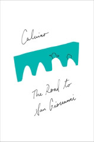

The Road to San Giovanni
La strada di San Giovanni
More biographical essays written across decades, and unlike Calvino's earlier semi-autobiographical works that visit some of the same ground (The Path to the Spiders' Nests, most prominently) these are much more in his later style -- long, elliptical sentences and passages that are better for me at evoking mood and atmosphere and presence than his earlier, more straightforward narratives.
Elsewhere in the collection, though, we get an essay that starts with an incredibly narrow, mundane focus: "La Poubelle Agréée" starts from the act of taking out the trash, and branches off into almost unimaginable detail about domestic life in Paris, Calvino's relationship with his wife and daughter, and immigrants in Parisian society.
And finally, we get something that seems even more Calvino than his now-familiar style. "From the Opaque" goes further into detail and farther from structure, at times becoming almost cubist in the attempt to express a concept from multiple angles all at once, without concern for the connective tissue that grammar prescribes.